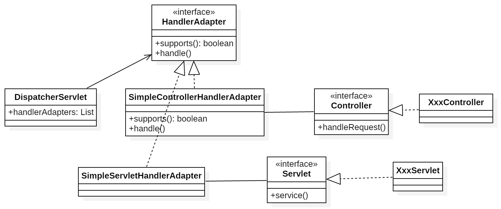

Also known as
Wrapper
Intent
Convert the interface of a class into another interface the clients expect.
适配器模式不适合在详细设计阶段使用它，它是一种补偿模式，专用来在系统后期扩展、修改时所用。
UML
Class Adapter
More Details:
Object Adapter
在Object Adapter中，Adapter和Adaptee不是继承关系，而是直接关联的关系（或者说是委托的方式）
More Details:
Adapter Code sample:1
2
3
4
5
6
7
8
9
10
11
12public class Adapter implements Target {
private Adaptee adaptee;
public Adapter(Adaptee adaptee) {
this.adaptee = adaptee;
}
public void do() {
// sth else
adaptee.specificDo();
}
}
Applicability
Use the Adapter pattern when
- you want to use an existing class, and its interface does not match the one you need
- you want to create a reusable class that cooperates with unrelated or unforeseen classes, that is, classes that don’t necessarily have compatible interfaces
- you need to use several existing subclasses, but it’s impractical to adapt their interface by subclassing every one. An object adapter can adapt the interface of its parent class.
- most of the applications using third party libraries use adapters as a middle layer between the application and the 3rd party library to decouple the application from the library. If another library has to be used only an adapter for the new library is required without having to change the application code.
Consequences
Class and object adapters have different trade-offs.
A class adapter
- adapts Adaptee to Target by committing to a concrete Adaptee class. As a consequence, a class adapter won’t work when we want to adapt a class and all its subclasses.
- let’s Adapter override some of Adaptee’s behavior, since Adapter is a subclass of Adaptee.
- introduces only one object, and no additional pointer indirection is needed to get to the adaptee.
An object adapter
- let’s a single Adapter work with many Adaptees—that is, the Adaptee itself and all of its subclasses (if any). The Adapter can also add functionality to all Adaptees at once.
- makes it harder to override Adaptee behavior. It will require subclassing Adaptee and making Adapter refer to the subclass rather than the Adaptee itself.
关键就是：借助一个接口或者类，通过某种方式（关联等）将另外一个不匹配不符合要求的类/接口适配成所需的样子。一般用于已有系统的拓展。
Example
SpringMVC-HandlerAdapter
Adapter接口：1
2
3
4
5
6public interface HandlerAdapter {
boolean supports(Object handler);
ModelAndView handle(HttpServletRequest request, HttpServletResponse response, Object handler) throws Exception;
}
Adaptee - SimpleServletHandlerAdapter:1
2
3
4
5
6
7
8
9public class SimpleServletHandlerAdapter implements HandlerAdapter {
public boolean supports(Object handler) {
return (handler instanceof Servlet);
}
public ModelAndView handle(HttpServletRequest request, HttpServletResponse response, Object handler) throws Exception {
return ((Servlet) handler).service(request, response);
}
}
Adaptee - SimpleControllerHandlerAdapter:1
2
3
4
5
6
7
8
9public class SimpleControllerHandlerAdapter implements HandlerAdapter {
public boolean supports(Object handler) {
return (handler instanceof Controller);
}
public ModelAndView handle(HttpServletRequest request, HttpServletResponse response, Object handler) throws Exception {
return ((Controller) handler).handleRequest(request, response);
}
}
Adaptee - HttpRequestHandlerAdapter:1
2
3
4
5
6
7
8
9
10public class HttpRequestHandlerAdapter implements HandlerAdapter {
public boolean supports(Object handler) {
return (handler instanceof HttpRequestHandler);
}
public ModelAndView handle(HttpServletRequest request, HttpServletResponse response, Object handler) throws Exception {
((HttpRequestHandler) handler).handleRequest(request, response);
return null;
}
}
Client:1
2
3
4
5
6
7
8
9
10
11pubilc class DispatcherServelet {
protected void doDispatch(HttpServletRequest request, HttpServletResponse response) {
...
// Determine handler adapter for the current request.
HandlerAdapter ha = getHandlerAdapter(mappedHandler.getHandler());
...
// return ModelAndView
mv = ha.handle(processedRequest, response, mappedHandler.getHandler());
...
}
}
这里Adapter与Adaptee是借助一个support方法进行关联。也不存在Target接口。
实际上演变成了：
具体点就是：

可以看出，HandlerAdapter是为了适配Controller，Servlet等接口的处理方法的不同。
将Controller的handleRequest()，Serlvet的doService()适配成SpringMVC所需的handle():ModelAndView.